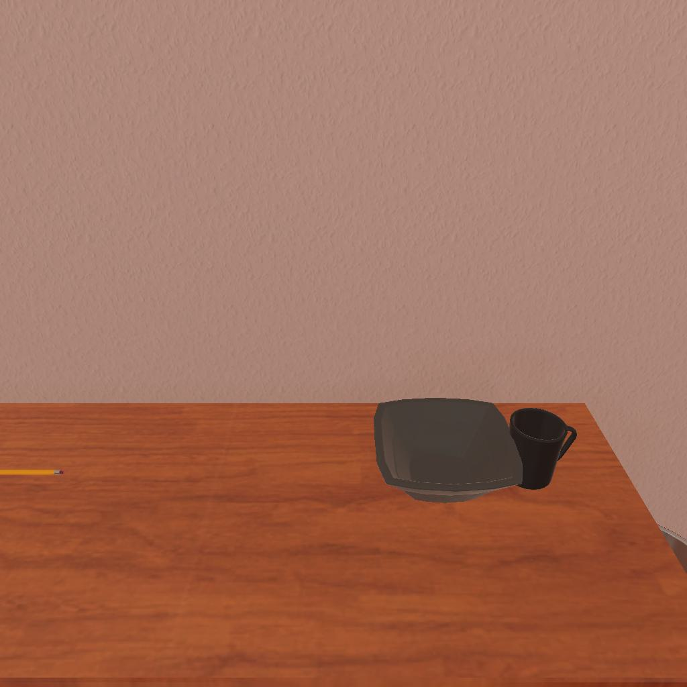

---------------------------------------------------------task: 2---------------------------------------------------------
--------------------------------------------------------------------------------------------------------------------------------------------------------------------
--------------------------------------------------------------------------------------------------------------------------------------------------------------------
Step:--------------------------------------------------------------------------1-------------------------------------------------------------------------------
----------------------------------------
VLM Prompt:
Image1:
Image2:
**Instruction**
1. Analyze the provided images to identify all visible household objects and compare the difference between images (e.h. whether the object is opened or not and taken on hand or not), focusing on those relevant to the task description "look at pen under the desklamp."
2. Use the analysis of images and the task hint "The agent must find an object of the desired type, locate and turn on a light source with the desired object in-hand." to answer the question: what is the most reasonable action in the choices for the task description "look at pen under the desklamp"?
3. Decide and write the answer using the template: The answer is: (i): , where i is the real number. If there is no desired object in images, search every place based on **Initial Observation** to find the object. And if no one is exactly correct, choose a similar answer.
**Initial Observation**
You are in the middle of a room. Looking quickly around you, you can see bed (1-2), dresser (1), drawer (1-11), sidetable (1-2), desk (1), garbagecan (1), safe (1)
**Answer Choices**
(1): go to bed 1
(2): go to dresser 1
(3): go to bed 2
(4): go to drawer 1
(5): go to sidetable 1
(6): go to drawer 2
(7): go to sidetable 2
(8): go to drawer 3
(9): go to drawer 4
(10): go to garbagecan 1
(11): go to drawer 5
(12): go to drawer 6
(13): go to drawer 7
(14): go to drawer 8
(15): go to drawer 9
(16): go to drawer 10
(17): go to drawer 11
(18): go to safe 1
(19): take bowl 1 from desk 1
(20): take mug 1 from desk 1
(21): take pencil 1 from desk 1
(22): examine desk 1
**Answer**
Let's think step by step by following the instructions.
----------------------------------------
----------------------------------------
Original Response:
The task description is "look at pen under the desklamp." Firstly, we need to identify if there is a pen and a desklamp visible in the images provided.
Image1:
- No visible objects on the desk.
Image2:
- A bowl, a mug, and a pencil on the desk. There is no pen visible nor a desklamp.
Since the task is to look at a pen under a desklamp, and there is no pen or desklamp visible in the images, we must search other areas based on the Initial Observation.
The Initial Observation lists a bed, dresser, drawer, sidetable, desk, garbagecan, and safe. The most logical places to find a pen would be on a desk or in a drawer. Since we have already seen the desk (desk 1) in Image2 and there is no pen, the next reasonable action would be to search the drawers.
The answer is: (4): go to drawer 1. If the pen is not found there, the agent should continue to search the other drawers in numerical order.
----------------------------------------
----------------------------------------
>>> Refine Original VLM Response and Get Pure Action: go to drawer 1
----------------------------------------
-----------------------------------------------------------------
Running time: 61.42980480194092 seconds
Total Money: 0.5281
-----------------------------------------------------------------
-----------------------------------------------------------------
Text Observation:You arrive at loc 3. The drawer 1 is closed.
-----------------------------------------------------------------
UNSUCCEED